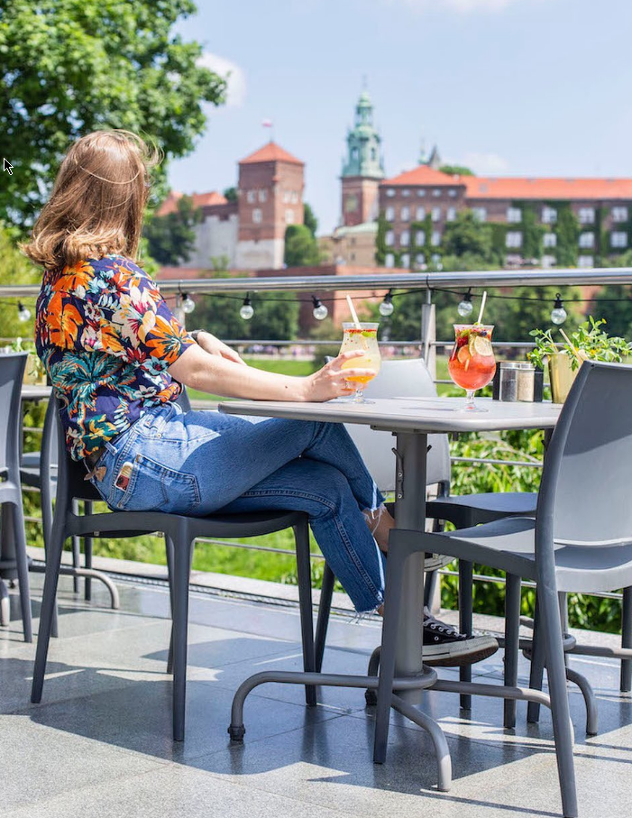
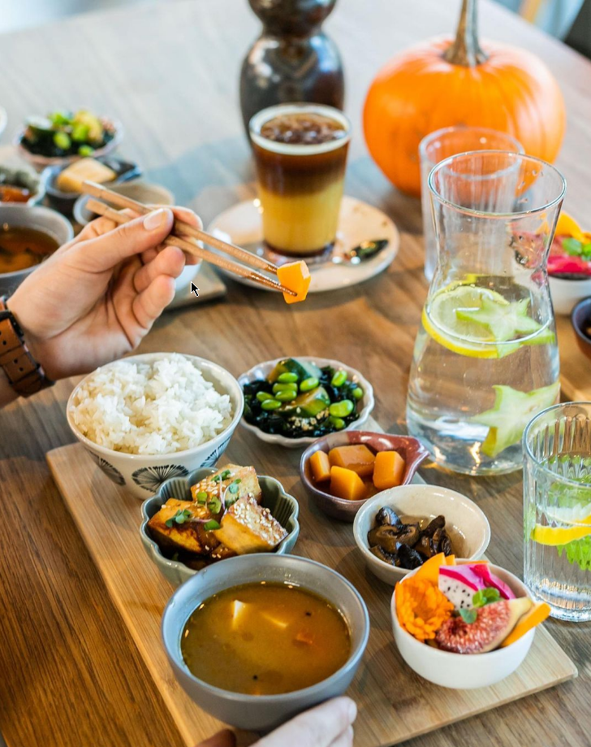

Cafe Manggha


Cafe Manggha to niezwykła muzealna kawiarnia, która wyznacza drogę innym tego typu miejscom w Polsce. Otwarta zarówno dla odwiedzających muzeum, jak i dla gości z zewnątrz. Doceniana przez przyjezdnych i lubiana przez mieszkańców za przyjemną atmosferę oraz proste, smaczne jedzenie. W menu znaleźć można dania inspirowane Japonią oraz kuchniami Azji, zupy i lekkie sałatki. Codziennie dostępny jest także szeroki wybór deserów i ciast domowego wypieku. Na miejscu warto spróbować również wyjątkowych, tradycyjnie parzonych herbat, których próżno szukać w jakimkolwiek innym miejscu w Polsce.
Website Facebook